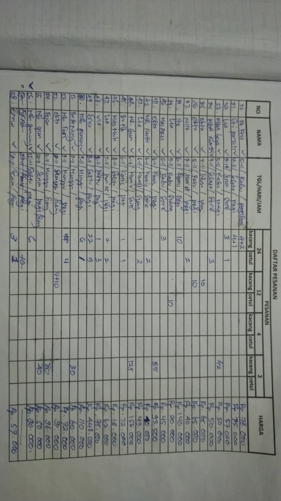

UMKM Peyek Goyang is a micro-enterprise operating in the snack culinary sector. Prior to this project, all daily transaction recording was done manually and was not structured.
This manual process posed several critical bottlenecks:
| Before (Manual Records) | After (Structured Excel System) |
|---|---|
|
Manual, unstructured records, high risk of duplication & price errors.
 |
Structured relational database system in Excel, with Product Master & Customer Master as Single Source of Truth, automated formulas, and interactive dashboard.
|
This project transforms manual records into a structured database schema in Microsoft Excel consisting of 3 primary worksheets:
1. Dashboard (Executive Summary & Visual Analysis)
2. Data_Pesanan (Raw Transactional Data)
TRX-0001, etc.) and automatic extraction of day names using the =TEXT(...) function.XLOOKUP and ISNA error handling.3. Master Data (Product Master & Customer Master)